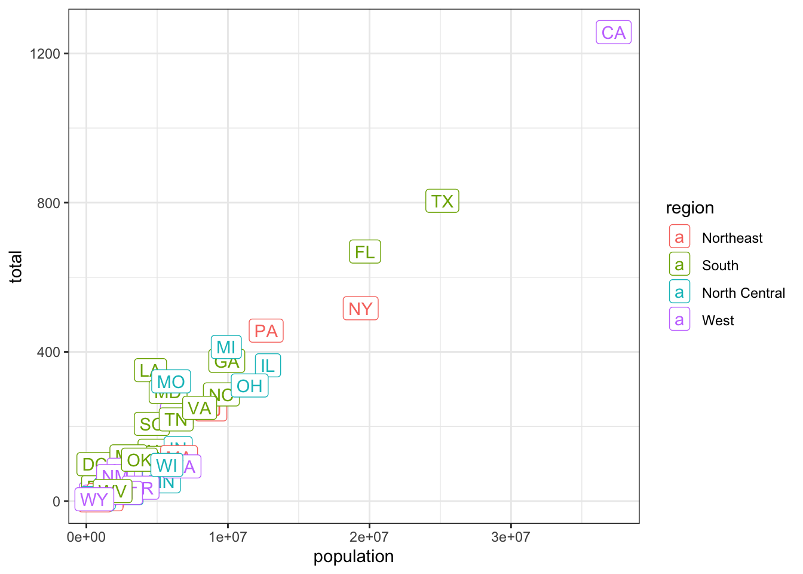

library(tidyverse)
library(dslabs)BIOL 5404 Assignment 1
Instructions
- Create a new .R script to complete this assignment in your local assignments folder for this course.
- You’ll submit the .R script on Brightspace.
- Put your FIRST and LAST NAME in the file name of the script.
- Put your name at the top of the script as well.
- Please do not include your student ID, just your name is enough.
- Show your work!
- Make sure your script is organized and legible.
- Use code sections (####) & question numbers as outlined below.
- Provide all written answers as brief # comments within your script.
- Be sure to load all packages needed at the top of your script, like this (adding any other packages needed):
Part 1
The murders dataset from the dslabs package has data on gun homicides for 50 US states and the District of Columbia, Washington DC.
help(murders)1a. Plot the distribution of ‘total’ (the number of gun homicides in 2010).
1b. Create a new column in the murders dataframe that has the rate of gun homicides per 1,000,000 people in the population. Plot the distribution of this new variable.
1c. Use R to identify the following outliers (i.e., by indexing based on logical conditions, or by using R functions):
- Which state has the highest total count of gun homicides?
- Which state has the highest per capita murder rate? Why do you think this particular state’s per capita murder rate is SO much higher than the others?
Part 2
Using ggplot, make this graph plotting total vs. population:
ggplot(murders, mapping =
aes(x = population, y = total, label = abb, color = region)) +
geom_label() +
theme_bw()
2a. Next, use a separate call to ggplot to recreate this graph but modify it so that BOTH the x and y variables plotted on a log scale.
2b. Why it is helpful to do this? Briefly explain.
2c. Next, using a separate ggplot call again, remake the graph with the following changes:
- add points (you may need to investigate how to do this!),
- reduce the size of the label text,
- move the labels to be above and to the right of each datapoint, so that both the points and labels can be seen,
- capitalize the x-axis and y-axis labels, and
- capitalize the title on the legend.
Feel free to make any other aesthetic changes, as desired.
Part 3
In the murders dataset, use indexing and logical operators to identify:
3a. Which US states have a larger population than the province of Ontario?
3b. Which US states are considered to be in the South AND have a population of fewer than 10 million people?
3c. How many US states have a population between 7 and 15 million?
3d. The line below attempts to find any northern states with a population greater than 7 million, however, the output is empty. What’s wrong with this attempt? Fix it in your script.
subset(murders, region == 'North' & population > 7000000)[1] state abb region population total
<0 rows> (or 0-length row.names)Part 4
Next, we will use the data from Roche et al. 2015 (study on data archiving from Week 1).
You will need to use the dataset from Figshare, plus their meta-data to complete this assignment. Go to their paper, and find the link within the paper to their data archive on Figshare. From the Figshare respository, ‘download all’ files. Move the files to an appropriate working directory for this assignment (i.e., your assignments folder for this course).
Bring the csv data file into R by adding a line to your .R script, as follows:
data <- read_csv('Dryad_data_2012_2013.csv')4a. First, reduce the dataframe to JUST have the following 10 columns:
- dataset, journal, year, noFiles, fileExt, readme, analysisPgrm, analysisCode, complScore, reuseScore
4b. How many unique journals are in Roche et al.’s dataset? Note, this is asking about journals, not studies!
4c. Check to make sure the two SCORE columns have the expected range of values.
4d. What is the mean completeness score?
4e. What is the most common (modal) reusability score?
4f. How many studies have the lowest possible completeness score, but the highest possible reusability score?
4g. How many studies have a reusability score of 3, but the second-highest possible completeness score?
4h. What info is provided in the column analysisPgrm?
4i. Are there any NAs (missing values) in analysisPgrm? How many are missing?
4j. Look closely at how values in analysisPgrm are stored/entered. Briefly, what potential issue do you see that would need to be handled if you wanted to analyze the information in this column?
Part 5
Let’s create a new column that designates each study as having used R or not:
data$useR <- grepl('R', data$analysisPgrm, ignore.case = F)
table(data$useR) # summarizes how many studies did not, and did, use R5a. Create ANOTHER new column in the dataframe that designates each study as having used csv for any of their fileExt, or not.
5b. What proportion of studies used csv?
5c. Using EITHER base R or ggplot (or any other package you wish), generate a bar graph that plots the relationship between these two categorical variables above (i.e., whether a study used R (or not) & whether a study used csv (or not)). Bar graphs are best for showing the distribution of one or more categorical variables. To show the relationship between two categorical variables here, you should use either a grouped bar graph, or a stacked bar graph.
5d. Modify your plot to include the necessary axis labels, legend, and other features, so that a reader can interpret what your graph is showing.
5e. Use a chi-squared contingency test to evaluate whether studies using R were any more or less likely to use csv. What is your conclusion?
Part 6
6a. What does the column readme show?
6b. What does the table below tell us? Add this to your script and comment on what it shows.
table(data$readme)6c. Using either base R or ggplot (or any other packages you wish), plot the association between completeness score (y axis) and readme (x). Hint: R needs to be told to treat readme as categorical/factor.
6d. Modify your plot to include the necessary features so that a reader can interpret what it is showing.
6e. Use the function lm() to fit a linear model testing whether a study’s completeness score is associated with readme. What is your conclusion? Is it surprising?
Extra optional challenges
These are optional, only do what you want/are able to here.
- How many papers in Roche et al.’s dataset did not specify ANY analysis program?
- What was the maximum number of analysis programs within a single study? (Determine using R, not manually.)
- Fit a binomial model to determine whether the probability of csv file being used increases with the the number of data files for a paper. What do you conclude?
- Fit a model OR create a visualization to investigate another association in this dataset (is Y associated with X?). What do you expect to find? What does your model/visualization suggest?
- CHALLENGE… Using R, write a script that finds the unique solution to the wintry word puzzle shown in this image below. There is only one unique solution here!